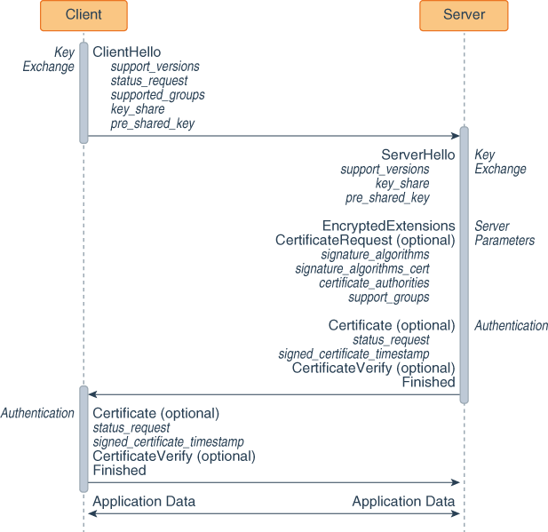
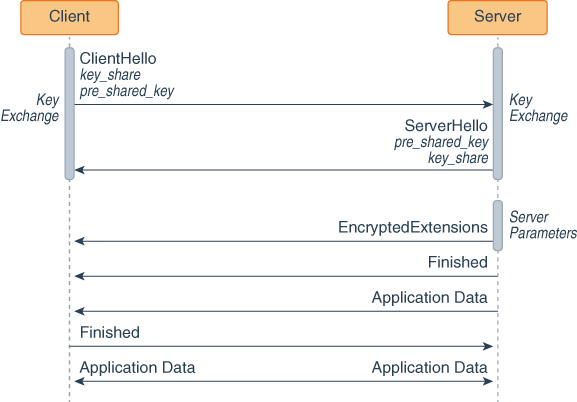
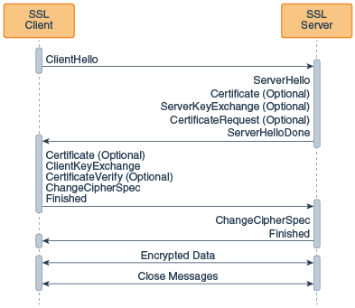

Transport Layer Security (TLS) is the most widely used protocol for implementing cryptography on the web. TLS uses a combination of cryptographic processes to provide secure communication over a network. This section provides an introduction to TLS and the cryptographic processes it uses.
TLS provides a secure enhancement to the standard TCP/IP sockets protocol used for Internet communications. As shown in the table TCP/IP Protocol Stack with TLS, the secure sockets layer is added between the transport layer and the application layer in the standard TCP/IP protocol stack. The application most commonly used with TLS is Hypertext Transfer Protocol (HTTP), the protocol for Internet web pages. Other applications, such as Net News Transfer Protocol (NNTP), Telnet, Lightweight Directory Access Protocol (LDAP), Interactive Message Access Protocol (IMAP), and File Transfer Protocol (FTP), can be used with TLS as well.
TCP/IP Protocol Stack with TLS
| TCP/IP Layer | Protocol |
|---|---|
| Application Layer | HTTP, NNTP, Telnet, FTP, and so on |
| Transport Layer Security | TLS |
| Transmission Control Protocol | TCP |
| Internet Layer | IP |
Secure Socket Layer (SSL) was developed by Netscape in 1994, and with input from the Internet community, has evolved to become a standard. It is now under the control of the international standards organization, the Internet Engineering Task Force (IETF). The IETF renamed SSL to TLS, and released the first specification, version 1.0, in January 1999. TLS 1.0 is a modest upgrade to the most recent version of SSL, version 3.0. This upgrade corrected defects in previous versions and prohibited the use of known weak algorithms. TLS 1.1 was released in April 2006, TLS 1.2 in August 2008, and TLS 1.3 in August 2018. TLS 1.3 is a major overhaul of the TLS protocol and provides significant security and performance improvements over previous versions.
One of the reasons that TLS is effective is that it uses several different cryptographic processes. TLS uses public-key cryptography to provide authentication, and secret-key cryptography with hash functions to provide for privacy and data integrity. Before you can understand TLS, it’s helpful to understand these cryptographic processes.
The primary purpose of cryptography is to make it difficult for an unauthorized third party to access and understand private communication between two parties. It is not always possible to restrict all unauthorized access to data, but private data can be made unintelligible to unauthorized parties through the process of encryption. Encryption uses complex algorithms to convert the original message (cleartext) to an encoded message (ciphertext). The algorithms used to encrypt and decrypt data that is transferred over a network typically come in two categories: secret-key cryptography and public-key cryptography.
Both secret-key cryptography and public-key cryptography depend on the use of an agreed-upon cryptographic key or pair of keys. A key is a string of bits that is used by the cryptographic algorithm or algorithms during the process of encrypting and decrypting the data. A cryptographic key is like a key for a lock; only with the right key can you open the lock.
Safely transmitting a key between two communicating parties is not a trivial matter. A public key certificate enables a party to safely transmit its public key, while providing assurance to the receiver of the authenticity of the public key. See Public Key Certificates.
The descriptions of the cryptographic processes in secret-key cryptography and public-key cryptography follow conventions widely used by the security community: the two communicating parties are labeled with the names Alice and Bob. The unauthorized third party, also known as the attacker, is named Charlie.
With secret-key cryptography, both communicating parties, Alice and Bob, use the same key to encrypt and decrypt the messages. Before any encrypted data can be sent over the network, both Alice and Bob must have the key and must agree on the cryptographic algorithm that they will use for encryption and decryption
One of the major problems with secret-key cryptography is the logistical issue of how to get the key from one party to the other without allowing access to an attacker. If Alice and Bob are securing their data with secret-key cryptography, and if Charlie gains access to their key, then Charlie can understand any secret messages he intercepts between Alice and Bob. Not only can Charlie decrypt Alice's and Bob's messages, but he can also pretend that he is Alice and send encrypted data to Bob. Bob won’t know that the message came from Charlie, not Alice.
After the problem of secret key distribution is solved, secret-key cryptography can be a valuable tool. The algorithms provide excellent security and encrypt data relatively quickly. The majority of the sensitive data sent in an TLS session is sent using secret-key cryptography.
Secret-key cryptography is also called symmetric cryptography because the same key is used to both encrypt and decrypt the data. Well-known secret-key cryptographic algorithms include Advanced Encryption Standard (AES), Triple Data Encryption Standard (3DES), and Rivest Cipher 4 (RC4).
Public-key cryptography solves the logistical problem of key distribution by using both a public key and a private key. The public key can be sent openly through the network while the private key is kept private by one of the communicating parties. The public and the private keys are cryptographic inverses of each other; what one key encrypts, the other key will decrypt.
Assume that Bob wants to send a secret message to Alice using public-key cryptography. Alice has both a public key and a private key, so she keeps her private key in a safe place and sends her public key to Bob. Bob encrypts the secret message to Alice using Alice's public key. Alice can later decrypt the message with her private key.
If Alice encrypts a message using her private key and sends the encrypted message to Bob, then Bob can be sure that the data he receives comes from Alice; if Bob can decrypt the data with Alice's public key, the message must have been encrypted by Alice with her private key, and only Alice has Alice's private key. The problem is that anybody else can read the message as well because Alice's public key is public. Although this scenario does not allow for secure data communication, it does provide the basis for digital signatures. A digital signature is one of the components of a public key certificate, and is used in TLS to authenticate a client or a server. See Public Key Certificates and Digital Signatures.
Public-key cryptography is also called asymmetric
cryptography because different keys are used to encrypt
and decrypt the data. A well-known public key cryptographic
algorithm often used with TLS is the Rivest Shamir Adleman (RSA)
algorithm. Another public key algorithm used with TLS that is
designed specifically for secret key exchange is the
Diffie-Hellman (DH) algorithm. Public-key cryptography requires
extensive computations, making it very slow. It is therefore
typically used only for encrypting small pieces of data, such as
secret keys, rather than for the bulk of encrypted data
communications.
Both secret-key cryptography and public-key cryptography have strengths and weaknesses. With secret-key cryptography, data can be encrypted and decrypted quickly, but because both communicating parties must share the same secret key information, the logistics of exchanging the key can be a problem. With public-key cryptography, key exchange is not a problem because the public key does not need to be kept secret, but the algorithms used to encrypt and decrypt data require extensive computations, and are therefore very slow.
A public key certificate provides a safe way for an entity to pass on its public key to be used in asymmetric cryptography. The public key certificate avoids the following situation: if Charlie creates his own public key and private key, he can claim that he is Alice and send his public key to Bob. Bob will be able to communicate with Charlie, but Bob will think that he is sending his data to Alice.
A public key certificate can be thought of as the digital equivalent of a passport. It is issued by a trusted organization and provides identification for the bearer. A trusted organization that issues public key certificates is known as a Certificate Authority (CA). The CA can be likened to a notary public. To obtain a certificate from a CA, one must provide proof of identity. Once the CA is confident that the applicant represents the organization it says it represents, the CA signs the certificate attesting to the validity of the information contained within the certificate.
A public key certificate contains the following fields:
If Bob only accepts Alice's public key as valid when she sends it in a public key certificate, then Bob won’t be fooled into sending secret information to Charlie when Charlie masquerades as Alice.
Multiple certificates may be linked in a certificate chain. When a certificate chain is used, the first certificate is always that of the sender. The next is the certificate of the entity that issued the sender's certificate. If more certificates are in the chain, then each is that of the authority that issued the previous certificate. The final certificate in the chain is the certificate for a root CA. A root CA is a public Certificate Authority that is widely trusted. Information for several root CAs is typically stored in the client's Internet browser. This information includes the CA's public key. Well-known CAs include DigiCert, Entrust, and GlobalSign.
When sending encrypted data, TLS typically uses a cryptographic hash function to ensure data integrity. The hash function prevents Charlie from tampering with data that Alice sends to Bob.
A cryptographic hash function is similar to a checksum. The
main difference is that whereas a checksum is designed to detect
accidental alterations in data, a cryptographic hash function is
designed to detect deliberate alterations. When data is processed
by a cryptographic hash function, a small string of bits, known
as a hash, is generated. The slightest change to the
message typically makes a large change in the resulting hash. A
cryptographic hash function does not require a cryptographic key.
A hash function often used with TLS is Secure Hash Algorithm
(SHA). SHA was proposed by the U.S. National
Institute of Standards and Technology (NIST).
A message authentication code (MAC) is similar to a cryptographic hash, except that it is based on a secret key. When secret key information is included with the data that is processed by a cryptographic hash function, then the resulting hash is known as an HMAC.
If Alice wants to be sure that Charlie does not tamper with her message to Bob, then she can calculate an HMAC for her message and append the HMAC to her original message. She can then encrypt the message plus the HMAC using a secret key that she shares with Bob. When Bob decrypts the message and calculates the HMAC, he will be able to tell if the message was modified in transit. With TLS, an HMAC is used with the transmission of secure data.
Once a cryptographic hash is created for a message, the hash is encrypted with the sender's private key. This encrypted hash is called a digital signature.
Communication using TLS 1.3 begins the TLS handshake. This is an initial negotiation between the client and server that establishes the parameters of their subsequent interactions within TLS. It consists of three phases: key exchange, server parameters, and authentication:
Key Exchange: This phase establishes shared
keying material, such as which named group the shared key can
belong to (Elliptic Curve Groups (ECDHE) or Finite Field Groups
(DHE)), and selects cryptographic parameters, such as symmetric
cipher options.
Server Parameters: This phase establishes other
handshake parameters such as whether certificate-based client
authentication is desired.
Authentication: This phase authenticates the
server (and optionally the client) and provides key confirmation
and handshake integrity.
The following figure shows the sequence of messages for the full TLS handshake.
Key exchange:
The client sends a ClientHello message to server.
The server processes the ClientHello message and determines the appropriate cryptographic parameters for the connection. It then responds with its own ServerHello message, which indicates the negotiated connection parameters. For TLS 1.3, the ServerHello message determines the key and cipher options only. Other handshake parameters may be determined later.
Server parameters: The server sends two messages to establish server parameters:
EncryptedExtensions: This message contains responses to ClientHello extensions that are not required to determine the cryptographic parameters, other than those that are specific to individual certificates.
CertificateRequest (optional): If certificate-based client authentication is desired, then the server sends this message, which contains the desired parameters for that certificate. This message is omitted if client authentication is not desired.
Authentication:
The server sends these authentication messages:
Certificate (optional): This message contains the authentication certificate and any other supporting certificates in the certificate chain. This message is omitted if the server is not authenticating with a certificate.
Note: The Certificate message can contain a raw key instead of a certificate.
CertificateVerify (optional): This message contains a signature over the entire handshake using the private key corresponding to the public key in the Certificate message. This message is omitted if the server is not authenticating with a certificate.
Finished: a MAC (Message Authentication Code) over the entire handshake.
The client responds with its own Certificate, CertificateVerify, and Finished messages. The Certificate message is omitted if the server did not send a CertificateRequest message. The CertificateVerify message is omitted if the client is not authenticating with a certificate.
The client and server can now securely send application data to each other.
The key exchange messages, ClientHello and ServerHello, determine the security capabilities of the client and the server and establish shared secrets, including the traffic keys used to protect the rest of the handshake and the application data.
ClientHello
The TLS handshake begins with the client sending a ClientHello message to the server. This message contains the following fields:
Note: TLS messages may contain additional fields than the ones listed here; see the TLS 1.3 specification for full details about TLS messages and their fields.
cipher_suites: This field contains a list of the
symmetric cipher options supported by the client, specifically
the record protection algorithm (including secret key length) and
a hash to be used with Keyed-Hash Message Code (HMAC)-based
Extract-and-Expand Key Derivation Function (HKDF).
extensions: Extensions facilitates the addition
of new features to the TLS protocol with minimal impact to
existing clients. Extensions that the ClientHello message may
contain, but are not limited to, the following:
supported_versions: This extension indicates
which versions of TLS the client supports. The ClientHello
message must contain this message.
status_request: This extension indicates that
client wants to use a certificate status protocol; the server may
not agree to use it. An example of a certificate status protocol
is Online Certificate Status Protocol (OCSP). See Client-Driven OCSP and OCSP Stapling.
supported_groups: This extension indicates the
named groups that the client supports for key exchange. These
named groups include elliptic curve groups (ECDHE) and finite
field groups (DHE). The ClientHello message must include this
message if it’s using ECDHE or DHE key exchange.
key_share: This extension contains a list of
cryptographic parameters for key exchange. It contains a field
named client_shares that contains this list. Each item in this
list contains the following fields:
group: The name of the group on which the key
exchange cryptographic method is based. See The SunJSSE Provider
in JDK Providers
Documentation.
key_exchange: Key exchange information, which is
determined by the value of the group field.
pre_shared_key: A pre-shared key (PSK) is a
shared secret that was previously shared between the two parties
using some secure channel before it needs to be used. PSKs can be
established in a previous connection and then used to establish a
new connection. Once a handshake has completed, the server can
send to the client a PSK identity that corresponds to a unique
key derived from the initial handshake. See Session Resumption
with a Pre-Shared Key.
cookie: When a server sends a HelloRetryRequest
message, it can include this extension to the client. (The server
sends a HelloRetryRequest message in response to a ClientHello
message if it can find an acceptable set of parameters, but the
ClientHello message doesn’t have enough information to
proceed with the handshake.) One purpose of this extension is to
enable the server to force the client to demonstrate reachability
at their apparent network address (which provides some
denial-of-service attack (DoS) protection. When the client sends
a new ClientHello message, it must copy the contents received in
the HelloRetryRequest into a cookie extension in this new
ClientHello message.
server_name: TLS 1.3 doesn’t provide a
mechanism for a client to tell a server the name of the server it
is contacting. Clients can use this extension to provide this
information to facilitate connections to servers that host
multiple virtual servers at a single network address. Note that
some servers may require clients to send this extension.
ServerHello
The server responds to the client’s ClientHello message with a ServerHello message if it’s able to negotiate an acceptable set of handshake parameters. This message contains the following fields:
cipher_suite: This field contains the single
cipher suite selected by the server from the list in the
ClientHello.cipher_suites field.
extensions: This field contains extensions that
are required to establish the cryptographic context and negotiate
the protocol version. The extensions that the SeverHello may
contain include the following:
supported_versions: Indicates which version of
TLS it’s using. The ServerHello message must contain this
extension.
key_share: This extension contains a list of
cryptographic parameters for key exchange.
pre_shared_key: This extension contains the
pre-shared key the server agreed to use. See
Session Resumption with a Pre-Shared Key for information
about pre-shared keys.
The server sends other extensions separately in the EncryptedExtensions message.
After the server sends a ServerHello message to the client, it sends two messages to establish server parameters: EncryptedExtensions and CertificateRequest:
EncryptedExtensions: This message contains responses to ClientHello extensions that are not required to determine cryptographic parameters other than those that are specific to individual certificates.
CertificateRequest: If certificate-based client authentication is desired, then this message is sent. It contains parameters for a certificate requested from the client. It includes the following fields:
certificate_request_context: This field contains
an identifier that identifies the certificate request
extensions: This field contains extensions that
describe the requested certificate’s parameters. It may
contain the following extensions:
signature_algorithms: This extension indicates
which signature algorithms may be used in CertificateVerify
messages. The ServerHello message must contain this
extension.
signature_algorithms_cert: This extension
indicates which signature algorithms may be used in digital
signatures. If this message isn’t sent, then it uses the
values specified in the signature_algorithms extension.
certificate_authorities: This extension indicates
which certificate authorities the server accepts.
supported_groups: This message contains named
groups that the server prefers. The client may use this
information to change what groups it uses in its key_share
extension in subsequent connections.
The last three messages that the server and client send to each other in a TLS handshake are Certificate, CertificateVerify, and Finished.
Certificate
This message contains the authentication certificate and any other supporting certificates in the certificate chain. The server must send this message if the key exchange method uses certificates for authentication. The client must send this if and only if the server requested client authentication through a CertificateRequest message. The certificate message includes the following fields:
certificate_list: This field contains a sequence
of CertificateEntry structures, each containing a single
certificate and a set of extensions
extensions: Extensions that the Certificate
message may contain include the following:
status_request: See Client-Driven OCSP and OCSP Stapling
signed_certificate_timestamp: TLS clients
won’t accept certificates unless they are logged. When a
valid certificate is submitted to a log, the log must return a
Signed Certificate Timestamp (SCT); see RFC 6962:
Certificate Transparency.
CertificateVerify
This message contains a signature over the entire handshake using the private key corresponding to the public key in the Certificate message. It provides proof that the client or the server has the private key corresponding to its certificate. This message includes the following fields:
algorithm: This field contains the signature
algorithm used. See
The SunJSSE Provider in
JDK Providers Documentation for supported algorithms.
signature: This field contains the digital
signature using the algorithm.
Finished
This message contains a Message Authentication Code (MAC) over the entire handshake. Once the client and server have verified the Finished messages that they have received from their peers, both sides may send and receive application data over the connection.
A pre-shared key (PSK) is a shared secret that was previously shared between the two parties using some secure channel before it needs to be used. You can establish a PSK during one TLS handshake and then use it to establish a new connection in another handshake; this is called session resumption with a PSK. The PSK corresponds to a unique key derived from the initial handshake. If the server accepts the PSK when establishing a new connection, then the security context of this connection is cryptographically tied to the original connection, and the key derived from the initial handshake is used to bootstrap the cryptographic state instead of the full TLS handshake.
The following figures show two handshakes, the first establishes a PSK and the second uses it.
TLS 1.3 handshake that establishes a PSK

TLS 1.3 handshake that uses a PSK
The client sends a ClientHello message with a key_share extension to the server. This extension lists which key exchange cryptographic methods that the client supports.
The server responds with a ServerHello message with a key_share extension. This extension contains the cryptographic method it wants to use for the key exchange.
The server sends its server parameters to the client.
Both the server and client exchange authentication messages.
The server sends a NewSessionTicket message to the client, which contains a PSK that the client then may use for future handshakes by including it in the pre_shared_key extension in its ClientHello message.
The client and server can now exchange encrypted application data.
In a future handshake, the client sends to the server a ClientHello message with the key_share and pre_shared_key extensions. The pre_shared_key extension contains a PSK sent in a NewTicketSession message.
The server responds with a ServerHello message with the pre_shared_key and key_share extensions. The pre_shared_key extension contains the PSK the server as agreed to use.
The server sends its parameters to the client.
The server and the client send each other Finished messages. They don’t perform the authentication phase as the security context of this connection is cryptographically tied to the original connection.
The client and server can now exchange encrypted application data.
Note: The following are not supported in JDK 8:
Resumption using PSK only: You must use PSKs with (EC)DHE key exchange, which provides forward secrecy in combination with shared keys. Resumption using PSK only is less secure with regards to forward and backward secrecy.
Zero Round Trip Time Resumption (0–RTT): This enables the client and server to send application data in the first messages (ClientHello and ServerHello) to each other. The client uses a PSK to encrypt the application data it initially sends with the ClientHello and to authenticate the server. This has the security issues of resumption using PSK only and some potential for replay attacks.
Stateless server PSKs: RFC5077: Transport Layer Security (TLS) Session Resumption without Server-Site State describes a mechanism that enables the server to resume sessions and avoid keeping per-client session state. This mechanism would reduce server memory usage at the expense of forward secrecy for resumption using PSK only.
Out-of-band PSK establishment: This means the production of PSKs other than through NewSessionTicket messages.
The client and server can send other messages after the handshake: new session ticket message, post-handshake authentication, and key update.
The NewSessionTicket message, sent by the server after it receives the Finished message, contains a pre-shared key that the client then may use for future handshakes. See Session Resumption with a Pre-Shared Key.
If client sent the post_handshake_auth extension, the server may request client authentication at any time after the handshake by sending a CertificateRequest message. If the client authenticates, then it must send Certificate, CertificateVerify, and Finished messages. If the client declines, then it must send a Certificate message that contains no certificates and the Finished message.
The KeyUpdate handshake message is used to indicate that the sender is updating its sending cryptographic keys. It replaces the ChangeCipherSpec message in TLS 1.2.
You can specify a limit on the amount of data an algorithm may
encrypt with a specific set of keys with the
jdk.tls.keyLimits Security Property. See Limiting Amount of Data
Algorithms May Encrypt with a Set of Keys.
Enhancements to JSSE may introduce compatibility problems and other known issues, which are described in this section.
TLS 1.3 Not Directly Compatible with Previous Versions
TLS 1.3 is not directly compatible with previous versions. Although TLS 1.3 can be implemented with a backward-compatibility mode, there are still several compatibility risks to consider when upgrading to TLS 1.3:
TLS 1.3 uses a half-close policy, while TLS 1.2 and earlier use a duplex-close policy. For applications that depend on the duplex-close policy, there may be compatibility issues when upgrading to TLS 1.3.
The signature_algorithms_cert extension requires that pre-defined signature algorithms are used for certificate authentication. In practice, however, an application may use unsupported signature algorithms.
The DSA signature algorithm is not supported in TLS 1.3. If a server is configured to only use DSA certificates, it cannot negotiate a TLS 1.3 connection.
The supported cipher suites for TLS 1.3 are not the same as TLS 1.2 and earlier. If an application hardcodes cipher suites that are no longer supported, it may not be able to use TLS 1.3 without modifications to its code, for example TLS_AES_128_GCM_SHA256 (1.3 and later) versus TLS_ECDHE_RSA_WITH_AES_128_CBC_SHA (1.2 and earlier).
The TLS 1.3 session resumption and key update behaviors are different from TLS 1.2 and earlier. The compatibility impact should be minimal, but it could be a risk if an application depends on the handshake details of the TLS protocols.
Communication using SSL begins with an exchange of information between the client and the server. This exchange of information is called the SSL handshake. The SSL handshake includes the following stages:
The SSL session begins with a negotiation between the client
and the server as to which cipher suite they will use. A
cipher suite is a set of cryptographic algorithms
and key sizes that a computer can use to encrypt data. The cipher
suite includes information about the public key exchange
algorithms or key agreement algorithms, and cryptographic hash
functions. The client tells the server which cipher suites it has
available, and the server chooses the best mutually acceptable
cipher suite.
In SSL, the authentication step is optional, but in the example of an e-commerce transaction over the web, the client will generally want to authenticate the server. Authenticating the server allows the client to be sure that the server represents the entity that the client believes the server represents.
To prove that a server belongs to the organization that it claims to represent, the server presents its public key certificate to the client. If this certificate is valid, then the client can be sure of the identity of the server.
The client and server exchange information that allows them to agree on the same secret key. For example, with RSA, the client uses the server's public key, obtained from the public key certificate, to encrypt the secret key information. The client sends the encrypted secret key information to the server. Only the server can decrypt this message because the server's private key is required for this decryption.
Both the client and the server now have access to the same secret key. With each message, they use the cryptographic hash function, chosen in the first step of the handshake, and shared secret information, to compute an HMAC that they append to the message. They then use the secret key and the secret key algorithm negotiated in the first step of the handshake to encrypt the secure data and the HMAC. The client and server can now communicate securely using their encrypted and hashed data.
The TLS 1.2 Handshake provides a high-level description of the SSL handshake, which is the exchange of information between the client and the server prior to sending the encrypted message. The figure The SSL/TLS Handshake provides more detail. It shows the sequence of messages that are exchanged in the SSL handshake. Messages that are sent only in certain situations are noted as optional. Each of the SSL messages is described in detail afterward.
The SSL/TLS Handshake
The SSL messages are sent in the following order:
Note: Only a few Internet server applications ask for a certificate from the client.
close_notify alert to inform the
peer that the connection is closed.If the parameters generated during an SSL session are saved, then these parameters can sometimes be reused for future SSL sessions. Saving SSL session parameters allows encrypted communication to begin much more quickly.
Once the initial handshake is finished and application data is flowing, either side is free to initiate a new handshake at any time. An application might like to use a stronger cipher suite for especially critical operations, or a server application might want to require client authentication.
Regardless of the reason, the new handshake takes place over the existing encrypted session, and application data and handshake messages are interleaved until a new session is established.
Your application can initiate a new handshake by using one of the following methods:
SSLSocket.startHandshake()SSLEngine.beginHandshake()The SSL/TLS protocols define a specific series of steps to
ensure a protected connection. However, the choice
of cipher suite directly affects the type of security that the
connection enjoys. For example, if an anonymous cipher suite is
selected, then the application has no way to verify the remote
peer's identity. If a suite with no encryption is selected, then
the privacy of the data cannot be protected. Additionally, the
SSL/TLS protocols do not specify that the credentials received
must match those that peer might be expected to send. If the
connection were somehow redirected to a rogue peer, but the
rogue's credentials were acceptable based on the current trust
material, then the connection would be considered valid.
When using raw SSLSocket and
SSLEngine classes, you should always check the
peer's credentials before sending any data. The
SSLSocket and SSLEngine classes do not
automatically verify that the host name in a URL matches the host
name in the peer's credentials. An application could be exploited
with URL spoofing if the host name is not verified. Since JDK 7,
endpoint identification/verification procedures can be handled
during SSL/TLS handshaking. See the
SSLParameters.getEndpointIdentificationAlgorithm
method.
Protocols such as HTTPS (HTTP Over
TLS) do require host name verification. Since JDK 7, the
HTTPS endpoint identification is enforced during handshaking for
HttpsURLConnection by default. See the
SSLParameters.getEndpointIdentificationAlgorithm
method. Alternatively, applications can use the
HostnameVerifier interface to override the default
HTTPS host name rules. See HostnameVerifier
Interface and HttpsURLConnection
Class.